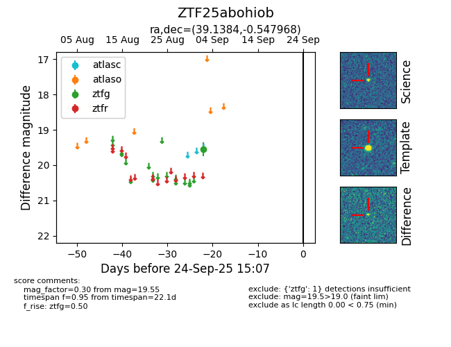

FINK: ZTF25abohiob
Lasair: ZTF25abohiob
ALeRCE: ZTF25abohiob
ZTF25abohiob (ztf,fink)
equatorial (ra, dec) = (39.1384,-0.54797)
galactic (l, b) = (170.8107,-53.35334)

last ztfg=19.55
1 ztfg detections